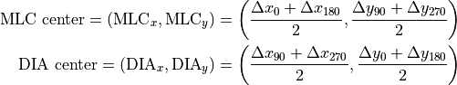
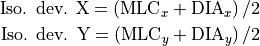

Focal spot position, collimator asymmetry¶
Now I will be using the Field size module of QAserver.
{kind=link}
As I have demonstrated in the Winston-Lutz section, it is possible to detect with the WL test whether the focal spot of the beam is not on the collimator axis of rotation. Measurements with two sets of images are needed: one with collimator angles 0/180, and another with collimator angles 90/270. In both cases the field must be shaped both with diaphragms and MLCs. If the measured longitudinal shifts of the BB differ, there is a GT deviation of the focal spot. A potential AB deviation can be seen from a single acquisition.
But in practice one would like to have a simpler test to detect such an error.
6 MV focal spot position and adjustment¶
Please read these two articles:
Nyiri BJ, Smale JR, Gerig LH, Two self-referencing methods for the measurement of beam spot position, Med Phys. 2012 Dec; 39(12):7635-43 (https://www.ncbi.nlm.nih.gov/pubmed/23231311)
Chojnowski JM, Taylor LM, Sykes JR, Thwaites DI, Beam focal spot position determination for an Elekta linac with the Agility® head; practical guide with a ready-to-go procedure, J Appl Clin Med Phys. 2018 Jul;19(4):44-47 (https://www.ncbi.nlm.nih.gov/pubmed/29761625/)
So, basically, if the focal spot is not on the collimator axis of rotation, you will get a wobbling CAX when the collimator is rotated. But not because of MLC or diaphragm asymmetry, but because diaphragms and MLCs are at different levels along the beam line. This is point nr 1.
Point nr 2 is the fact that you do not have the time to measure the position of the focal spot for all beams so accurately. Therefore, invest a lot of time in adjusting 6 MV. This will be your reference. All other beams can then be “aligned” with 6 MV by doing measurements in the water phantom.
Point nr 3, the hardest thing to detect and adjust is the GT deviation. If you miss by 0.1-0.3 mm at the isocenter, no matter. In the clinical setting you can compensate this with XVI’s flexmaps, so that at the end of the day you will not be missing small tumors.
Here is my measurement process with QAserver:
Set the optical crosshair to align with the collimator axis of rotation.
Put Elekta’s Agility calibration plate on the couch and align it with the crosshair.
Image the plate with a large field. Then with a field size of 7 cm x 7 cm acquire four images at collimator angles 270, 0, 90 and 180. Make sure the field is shaped with diaphragms and MLCs.
Analyze the images.
1. Setting the optical crosshair¶
Put a piece of paper on the couch, make a very very very small mark on the paper. Align the mark with the optical crosshair center. Rotate the collimator. There should be absolutely no wobble of the optical crosshair when the collimator is rotated. If there is even a small amount of wobble that is not caused by collimator eccentricity, have the crosshair adjusted.
2. Setting Elekta’s Agility plate¶
Set gantry and collimator angles to 0. Put on the couch Elekta’s Agility calibration plate at SSD = 100 cm. Align the plate with the crosshair.
{kind=link}
3. Acquiring images¶
Create a treatment in iView. Create a new Field. Make an EPID image of the plate first. Use a field size of 24 cm x 24 cm. Use at least 20 MU. Make sure you don’t have the edge of the couch in the image.
{kind=link}
While the plate is still on the couch, acquire four images of a square field 7 cm x 7 cm shaped with diaphragms and MLCs at collimator angles 270, 0, 90 and 180. Use at least 20 MUs. If you want, you can remove the plate and use larger fields, just don’t move the gantry, or the EPID!
{kind=link}
4. Analyzing images¶
Send the images to QAserver. Open the Field size module. Set the first image to the image of the plate, and for “set center” choose Plate. The second image should be one of the 7 x 7 field images. Run the analysis. For each 7 x 7 image collect the “Radiation center offset from mechanical center” results, denoted as and .
{kind=link}
Calculate the center of the MLC shaped field and the center of the diaphragm shaped field:

And average isocenter deviations:

Now the resolution. If the two centers, and differ, then the focal spot is not on the collimator axis of rotation. From the above table it seems that the focal spot is displaced in both directions. The deviation of the average isocenter from the collimator axis of rotation is about 0.4 mm in the GT direction, which is quite a lot. Of course, many more repetition of this measurement are necessary to get a reliable results.
Warning
Doing one single measurement or two is not enough to definitively tell whether the focal spot is not on the collimator axis of rotation. It is also prudent to establish the same result with the WL test before any adjustments are planned.
Iso. dev. X and Iso. dev. Y are highly susceptible to inaccuracies in plate position, crosshair position etc. But on the other hand, it will not be possible to calibrate Agility with Elekta’s procedures, if this deviation amounts to 0.5 mm when measured with Integrity workflows. So it’s good to measure this with QAserver from time to time just to be in touch with what is going on with the beam before somebody changes beam steering just because in a single measurement with Elekta’s calibration software there was a detected error. I haven’t been able to decipher how Elekta’s calibration software works, so I cannot give you any opinion here. Sometimes it gives me a similar result to my own, sometimes not. QAserver has its own problems as well.
Note
Before you collect measurements of the focal spot position that you would like to show to your service engineers, make sure the beam is optimized, especially Gun I Ctl. It can have an effect on focal spot position!
5. The effect of Bending fine on focal spot position¶
In the above case it turned out, when I repeated the measurements over several months, and analyzed the WL results as well, that the largest deviation was in the GT direction. The magnitude of this deviation was rounded to 0.3 mm. This can be remedied with Bending fine adjustment. Compare the above table with the following one. Both tables contain measurement performed with the same plate position in the time spacing of several minutes (just for demonstration). Bending fine was increased by 100 mA.
{kind=link}
Two measurements for 6 MV with increased Bending fine (100 mA). The plate is in the same position as for the measurements in the previous table. Note how the isocenter deviation came down, as well as the and difference.¶
Note how and get closer to each other, and the isocenter deviation also decreases. Bending fine changes focal spot position in the GT direction, but in contrast to 2R (or 1T/1R) does not change the tilt of the beam. Note also that it had an effect on AB deviations as well. In this test, 2R/2T were not adjusted for better symmetry after the change in Bending fine. I leave it to experienced engineers to set everything correctly.
Multiple radiation isocenters¶
Each energy has its own “isocenter”, that is to say, each energy has an independent focal spot position. One should therefore do the same test for other energies. For example, for 6 MV, 10 MV and 15 MV, on a good day I would get this:
{kind=link}
Isocenter deviations for 6 MV, 10 MV and 15 MV. The reference is the collimator axis of rotation (optical crosshair).¶
The above results clearly show that 10 MV does not align well with 6 MV. What is the consequence of this? Luckily, 6 MV has no significant lateral deviation. This means that a good flexmap calibration will teach XVI to position the tumor into the center of this beam, which is displaced by 0.24 mm towards G. Treating with this beam will be accurate. But, with the 10 MV beam we will miss the tumor by 0.5 mm longitudinally. Three options remain. One, leave it like it is. Two, push 10 MV closer to 6 MV. Three, fix all beams to be closer to 6 MV, and make 6 MV closer to the collimator axis of rotation. In such a situation I would probably choose option 2.
Asymmetry and Agility workflows¶
My summary of what to watch for when engineers calibrate Agility would be this:
Make sure that the optical crosshair is always accurate.
If the optical system is removed or even slightly disturbed, you will notice a difference in leaf positioning. A STW (Setting To Work) re-calibration should be done always. It will save you time with double testing if you just do it right after maintenance.
Before calibration do tests of the optical field. Change field sizes and observe how MLC leaves and diaphragms move to final position. If you notice that the whole leaf bank is moving about, trying to find a fixed position, then you have a problem that will affect the calibration process.
Do regular tests of focal spot position. Average measurements over several days. The measurements should be stable. If you have a larger deviation, in my experience more than 0.3 mm, you will have problems with Agility calibration.
Do not disregard Leaf bank height and lateral setup! Particularly if the whole BLD (Beam Limiting Device) was removed for maintenance and then put back on. A bad setup will cause MLC/diaphragm asymmetry.
Warning
Do not run workflows yourself, you may cause a miss-calibration.
Collimator asymmetry¶
You can measure this with the Winston-Lutz module, or with the Field size module. Acquire two images of a field, say 7 x 7, at two opposite collimator angles 0/180. Measure the spacing between the centers of the fields. This is quickly achieved in the Field size module by setting the first image as Image 1 and the opposite coll angle image as Image 2, and using the “CAX” method for Set center. This will give you an estimate of the asymmetry of MLC/diaphragm positioning. I usually measure at collimator angle pairs 90/270 as well. The table below demonstrates 10 measurements in one session. MLC leaves have a small average asymmetry of about 0.26 mm. Diaphragms do not have a significant asymmetry.
{kind=link}
Measurements of MLC and diaphragm asymmetry with a field size of 7 x 7. The asymmetry in this table is presented as one half of the distance between field centers at opposite collimator angles.¶
When this asymmetry (difference between centers) reaches 0.4 mm, you should report it to your service engineers. They should re-calibrate Agility, and also run the Leaf bank height and lateral setup workflow. Agility normally has asymmetry bellow 0.2 mm. It is a fantastic collimator!
Now, as a physicist I should complicate this a bit. To get a real grasp of what is wrong with the collimator, what is the error in positioning of each leaf bank and each diaphragm, one should do a more sophisticated measurement. If, for example, you rotate the collimator, and you get a 0.4 mm displacement between the centers, this does not mean that one bank is off by 0.2 mm, and the other by the same 0.2 mm. It could be 0.1 mm and 0.5 mm, or 0.1 mm and 0.3 mm. It depends on the direction of the error as well. Now I will leave it to you to make this measurement better.